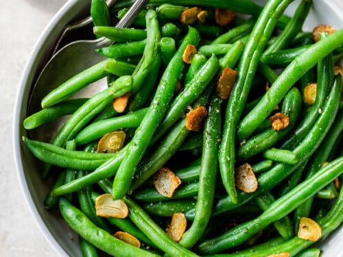

String Beans

Description
This garlic green bean recipe is a healthy side dish that is delicious and so easy!
Ingredients
-
Green Beans
-
Olive oil
-
Garlic
-
Salt and Pepper
Steps
-
Fill a large saucepan with one inch of water and bring it to a boil.
-
Add beans to the pan, cover it with a lid, and steam for four to five minutes.
-
Heat the olive oil in a pan, add the garlic, and cook until golden.
-
Add the beans to the pan, season with salt and pepper to taste, and toss well in the garlic and oil.